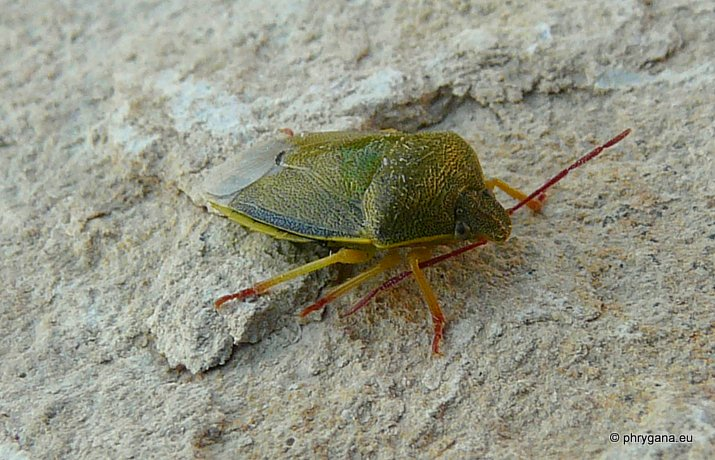
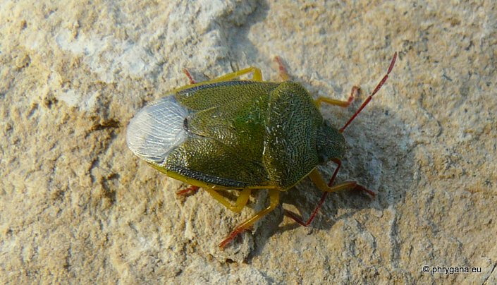

| PHRYGANA | Fauna | Flora | Galles | liste des espèces |
contact -
info - commentaires phrygana1 (at) gmail.com |
| Particularités crétoises | nouveautés | Mines | ressources naturelles |
| Piezodorus lituratus (Fabricius 1794) |
| 396 | Fauna | PENTATOMIDAE | PENTATOMINAE | Piezodorus Fiber 1861 |
|
 Piezodorus literatus Agios Giorgos (Melambes) 02 mars 2010 |
| Gorse Shieldbug -- Ginster Baumwanze |
| Longueur du corps entre 10 - 13 mm (les mâles sont un peu plus petits que les femelles). Couleur verte surtout au printemps, parfois vert rougeâtre en automne; antennes rouges; surface bien ponctuée |
| Oeufs: en forme de tonnelet, pondus en petits groupes sur les tiges et feuilles de la plante-hôte |
| Régime alimentaire: phytophage oligophage: se nourrit sur des Fabaceae sous famille des Genistae et des Trifoliae |
| Espèce bi - trivoltine |
| Période de vol: février mars avril mai octobre novembre décembre |
| Statut en Crète: indigène |
| Biotopes en Crète: phrygana, olivaies, garrigue, bords de chemins, jardins, terrains vagues, cultures |
| Distribution: Europe |
|
 Piezodorus literatus Agios Giorgos (Melambes) 02 mars 2010 |
| 25 août 2012 |
| © paul fontaine 2007 -- 2012 |